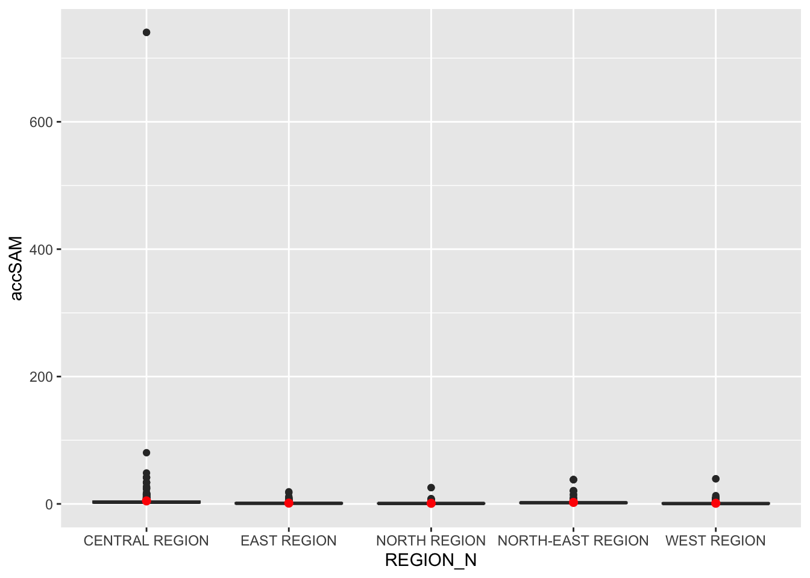

pacman::p_load(tmap, SpatialAcc, sf, ggstatsplot, reshape2, tidyverse)10A: Modelling Geographical Accessibility
In this exercise, we will learn to model geographical accessibility using Hansen’s potential model, Spatial Accessibility Measure (SAM), and other methods in R.
1 Exercise 10A Reference
R for Geospatial Data Science and Analytics - 17 Modelling Geographical Accessibility
2 Overview
In this exercise, we will learn to model geographical accessibility using Hansen’s potential model, Spatial Accessibility Measure (SAM), and other methods in R.
3 Learning Outcome
- Import GIS polygon data into R and save them as a simple feature data frame using the sf package.
- Import aspatial data into R and save them as a simple feature data frame using the sf package.
- Compute accessibility measures using Hansen’s potential model and Spatial Accessibility Measure (SAM).
- Visualize the accessibility measures using tmap and ggplot2 packages.
4 The Data
The following datasets will be used in this exercise:
| Data Set | Description | Format |
|---|---|---|
MP14_SUBZONE_NO_SEA_PL |
URA Master Plan 2014 subzone boundary GIS data. | ESRI Shapefile |
hexagons |
A 250m radius hexagons GIS data created using the st_make_grid() function of the sf package. |
ESRI Shapefile |
ELDERCARE |
GIS data showing the location of eldercare services, available in both ESRI shapefile and Google KML format. | ESRI Shapefile |
OD_Matrix |
A distance matrix with origin-destination information, including entry, network, and exit costs. | CSV |
All the values of the cost related fields are in metres.
5 Installing and Launching the R Packages
The following R packages will be used in this exercise:
| Package | Purpose | Use Case in Exercise |
|---|---|---|
| sf | Handles spatial data; imports, manages, and processes vector-based geospatial data. | Importing and transforming geospatial datasets such as subzone boundaries, hexagons, and eldercare locations. |
| SpatialAcc | Provides functions for computing geographical accessibility measures. | Calculating Hansen’s potential model, Spatial Accessibility Measure (SAM), and other accessibility metrics. |
| tidyverse | A collection of R packages for data science tasks like data manipulation, visualization, and modeling. | Wrangling and visualizing data, including importing CSV files and performing data transformations. |
| tmap | Creates static and interactive thematic maps using cartographic quality elements. | Visualizing accessibility measures on thematic maps. |
| ggplot2 | Creates data visualizations using a layered grammar of graphics. | Visualizing statistical graphics such as histograms and boxplots of accessibility measures. |
| ggstatsplot | Enhances plots with statistical details and facilitates data visualization. | Creating statistically enriched plots for exploratory data analysis and comparing distributions. |
| reshape2 | Provides tools to reshape data between wide and long formats. | Transforming data matrices into suitable formats for modeling. |
To install and load these packages, use the following code:
6 Geospatial Data Wrangling
6.1 Importing Geospatial Data
Three geospatial datasets—MP14_SUBZONE_NO_SEA_PL, hexagons, and ELDERCARE—are imported from the data/geospatial folder using the st_read() function from the sf package.
mpsz <- st_read(dsn = "data/geospatial", layer = "MP14_SUBZONE_NO_SEA_PL")Reading layer `MP14_SUBZONE_NO_SEA_PL' from data source
`/Users/walter/code/isss626/isss626-gaa/Hands-on_Ex/Hands-on_Ex10/data/geospatial'
using driver `ESRI Shapefile'
Simple feature collection with 323 features and 15 fields
Geometry type: MULTIPOLYGON
Dimension: XY
Bounding box: xmin: 2667.538 ymin: 15748.72 xmax: 56396.44 ymax: 50256.33
Projected CRS: SVY21hexagons <- st_read(dsn = "data/geospatial", layer = "hexagons")Reading layer `hexagons' from data source
`/Users/walter/code/isss626/isss626-gaa/Hands-on_Ex/Hands-on_Ex10/data/geospatial'
using driver `ESRI Shapefile'
Simple feature collection with 3125 features and 6 fields
Geometry type: POLYGON
Dimension: XY
Bounding box: xmin: 2667.538 ymin: 21506.33 xmax: 50010.26 ymax: 50256.33
Projected CRS: SVY21 / Singapore TMeldercare <- st_read(dsn = "data/geospatial", layer = "ELDERCARE")Reading layer `ELDERCARE' from data source
`/Users/walter/code/isss626/isss626-gaa/Hands-on_Ex/Hands-on_Ex10/data/geospatial'
using driver `ESRI Shapefile'
Simple feature collection with 120 features and 19 fields
Geometry type: POINT
Dimension: XY
Bounding box: xmin: 14481.92 ymin: 28218.43 xmax: 41665.14 ymax: 46804.9
Projected CRS: SVY21 / Singapore TM6.2 Updating CRS Information
We update the Coordinate Reference System (CRS) to EPSG:3414 for all datasets.
mpsz <- st_transform(mpsz, 3414)
eldercare <- st_transform(eldercare, 3414)
hexagons <- st_transform(hexagons, 3414)You can verify the CRS of mpsz using st_crs():
st_crs(mpsz)Coordinate Reference System:
User input: EPSG:3414
wkt:
PROJCRS["SVY21 / Singapore TM",
BASEGEOGCRS["SVY21",
DATUM["SVY21",
ELLIPSOID["WGS 84",6378137,298.257223563,
LENGTHUNIT["metre",1]]],
PRIMEM["Greenwich",0,
ANGLEUNIT["degree",0.0174532925199433]],
ID["EPSG",4757]],
CONVERSION["Singapore Transverse Mercator",
METHOD["Transverse Mercator",
ID["EPSG",9807]],
PARAMETER["Latitude of natural origin",1.36666666666667,
ANGLEUNIT["degree",0.0174532925199433],
ID["EPSG",8801]],
PARAMETER["Longitude of natural origin",103.833333333333,
ANGLEUNIT["degree",0.0174532925199433],
ID["EPSG",8802]],
PARAMETER["Scale factor at natural origin",1,
SCALEUNIT["unity",1],
ID["EPSG",8805]],
PARAMETER["False easting",28001.642,
LENGTHUNIT["metre",1],
ID["EPSG",8806]],
PARAMETER["False northing",38744.572,
LENGTHUNIT["metre",1],
ID["EPSG",8807]]],
CS[Cartesian,2],
AXIS["northing (N)",north,
ORDER[1],
LENGTHUNIT["metre",1]],
AXIS["easting (E)",east,
ORDER[2],
LENGTHUNIT["metre",1]],
USAGE[
SCOPE["Cadastre, engineering survey, topographic mapping."],
AREA["Singapore - onshore and offshore."],
BBOX[1.13,103.59,1.47,104.07]],
ID["EPSG",3414]]6.3 Cleaning and Updating Attribute Fields
We remove redundant fields and add new ones. For eldercare, we add a capacity field, and for hexagons, we add a demand field, both with a constant value of 100.
eldercare <- eldercare %>%
select(fid, ADDRESSPOS) %>%
mutate(capacity = 100)hexagons <- hexagons %>%
select(fid) %>%
mutate(demand = 100)
Tip
For this exercise, a constant value of 100 is used. In practice, actual demand and capacity values should be used.
7 Aspatial Data Handling and Wrangling
7.1 Importing Distance Matrix
We import the OD_Matrix.csv file using read_csv() from the readr package, which creates a tibble data frame called ODMatrix.
ODMatrix <- read_csv("data/aspatial/OD_Matrix.csv", skip = 0)7.2 Tidying the Distance Matrix
The imported ODMatrix organizes the distance matrix column-wise.
head(ODMatrix)# A tibble: 6 × 6
origin_id destination_id entry_cost network_cost exit_cost total_cost
<dbl> <dbl> <dbl> <dbl> <dbl> <dbl>
1 1 1 668. 19847. 47.6 20562.
2 1 2 668. 45027. 31.9 45727.
3 1 3 668. 17644. 173. 18486.
4 1 4 668. 36010. 92.2 36770.
5 1 5 668. 31068. 64.6 31801.
6 1 6 668. 31195. 117. 31980.However, most R modeling packages expect the matrix in a format where rows represent origins (from) and columns represent destinations (to).
We use pivot_wider() from the tidyr package to reshape the data from a long format to a wide format.
distmat <- ODMatrix %>%
select(origin_id, destination_id, total_cost) %>%
pivot_wider(names_from = destination_id, values_from = total_cost) %>%
select(-origin_id)7.3 Converting Distance to Kilometers
Since the distances are in meters (due to the SVY21 projected coordinate system), we convert them to kilometers using the code below.
distmat_km <- as.matrix(distmat/1000)8 Modelling and Visualising Accessibility using Hansen Method
Note
Hansen Accessibility Model (1959) is based upon concept that the more accessible an area is to various activities and the more vacant land area has greater growth potential. It is a spatial analysis method used to measure accessibility by considering both the distance to and the capacity of services or facilities (e.g., eldercare centers). It calculates accessibility as a function of the proximity of a location to these facilities, weighted by their capacity, and decays with distance.
For more info: Hansen Accessibility Model - Front Desk Architects
8.1 Computing Hansen’s Accessibility
We compute Hansen’s accessibility using the ac() function from the SpatialAcc package. The code below calculates accessibility, and the output is saved in a data frame called acc_Hansen.
acc_Hansen <- data.frame(ac(hexagons$demand,
eldercare$capacity,
distmat_km,
power = 2,
family = "Hansen"))
head(acc_Hansen) ac.hexagons.demand..eldercare.capacity..distmat_km..power...2..
1 1.648313e-14
2 1.096143e-16
3 3.865857e-17
4 1.482856e-17
5 1.051348e-17
6 5.076391e-188.2 Renaming Columns and Formatting Data
The default field names are messy, so we rename the output column to accHansen and convert the data to a tibble format.
8.3 Joining with Hexagons Data
We use bind_cols() from dplyr to join the accessibility data with the hexagons simple feature data frame. The output is saved as hexagon_Hansen.
hexagon_Hansen <- bind_cols(hexagons, acc_Hansen)
class(hexagon_Hansen)[1] "sf" "data.frame"Note that hexagon_Hansen is a simple feature data frame and not a typical tibble data frame.
8.4 Visualising Hansen’s Accessibility
8.4.1 Extracting Map Extent
First, we extract the extent of the hexagons data using st_bbox() from the sf package.
mapex <- st_bbox(hexagons)8.4.2 Creating the Map
We use tmap to visualize accessibility to eldercare centers with Hansen’s method. The map shows accessibility in Singapore with color-coded hexagons.
tmap_mode("plot")
tm_shape(hexagon_Hansen, bbox = mapex) +
tm_fill(col = "accHansen", n = 10, style = "quantile",
border.col = "black", border.lwd = 1) +
tm_shape(eldercare) +
tm_symbols(size = 0.1) +
tm_layout(main.title = "Accessibility to eldercare: Hansen method",
main.title.position = "center", main.title.size = 2,
legend.outside = FALSE, legend.height = 0.45,
legend.width = 3.0, legend.format = list(digits = 6),
legend.position = c("right", "top"), frame = TRUE) +
tm_compass(type="8star", size = 2) +
tm_scale_bar(width = 0.15) +
tm_grid(lwd = 0.1, alpha = 0.5)
8.5 Statistical Graphic Visualization
In this section, we will compare the distribution of Hansen’s accessibility values by URA Planning Region.
8.5.1 Comparing Hansen’s Accessibility by Region
We first add the planning region field to hexagon_Hansen by spatially joining it with the mpsz dataset.
hexagon_Hansen <- st_join(hexagon_Hansen, mpsz, join = st_intersects)Then, we use ggplot() to visualize the distribution of Hansen’s accessibility values by URA Planning Region, using a boxplot.
ggplot(data=hexagon_Hansen,
aes(y = log(accHansen), x= REGION_N)) +
geom_boxplot() +
geom_point(stat="summary", fun.y="mean", colour ="red", size=2)
Note
Observations: The Central Region shows the highest and most consistent accessibility, while the West Region exhibits the most variation and lower overall accessibility. The East Region has many outliers, indicating some areas with very low accessibility compared to the rest. The North-East and North Regions show moderate variation, with the North Region exhibiting more negative extremes than the North-East.
9 Modelling and Visualising Accessibility using KD2SFCA Method
9.1 Computing Accessibility
We calculate accessibility using the KD2SFCA method with the ac() function from SpatialAcc. data.frame() is used to save the output in a data frame called acc_KD2SFCA.
Note that KD2SFCA is used for family argument.
acc_KD2SFCA <- data.frame(ac(hexagons$demand, eldercare$capacity, distmat_km, d0 = 50, power = 2, family = "KD2SFCA"))
colnames(acc_KD2SFCA) <- "accKD2SFCA"
acc_KD2SFCA <- tibble::as_tibble(acc_KD2SFCA)
hexagon_KD2SFCA <- bind_cols(hexagons, acc_KD2SFCA)9.2 Visualizing KD2SFCA Accessibility
We create a map showing accessibility using the KD2SFCA method.
tmap_mode("plot")
tm_shape(hexagon_KD2SFCA, bbox = mapex) +
tm_fill(col = "accKD2SFCA", n = 10, style = "quantile", border.col = "black", border.lwd = 1) +
tm_shape(eldercare) + tm_symbols(size = 0.1) +
tm_layout(main.title = "Accessibility to Eldercare: KD2SFCA Method", main.title.position = "center", main.title.size = 2)9.3 Statistical Graphic Visualisation
Now, we will compare the distribution of KD2CFA accessibility values by URA Planning Region.
Firstly, we need to add the planning region field into hexagon_KD2SFCA simple feature data frame by using the code below.
hexagon_KD2SFCA <- st_join(hexagon_KD2SFCA, mpsz,
join = st_intersects)Next, ggplot() will be used to plot the distribution by using boxplot graphical method.
ggplot(data=hexagon_KD2SFCA,
aes(y = accKD2SFCA,
x= REGION_N)) +
geom_boxplot() +
geom_point(stat="summary",
fun.y="mean",
colour ="red",
size=2)
Note
Observations:
- The Central Region stands out with significantly higher accessibility to services compared to other regions.
- Most regions have lower accessibility, with minimal differences between the East, North-East, North, and West Regions.
10 Modelling and Visualising Accessibility using Spatial Accessibility Measure (SAM) Method
10.1 Computing Accessibility
We repeat the steps for the SAM method, using ac().
acc_SAM <- data.frame(ac(hexagons$demand, eldercare$capacity, distmat_km, d0 = 50, power = 2, family = "SAM"))
colnames(acc_SAM) <- "accSAM"
acc_SAM <- tbl_df(acc_SAM)
hexagon_SAM <- bind_cols(hexagons, acc_SAM)10.2 Visualizing SAM Accessibility
We create a map to visualize SAM accessibility.
tm_shape(hexagon_SAM, bbox = mapex) +
tm_fill(col = "accSAM", n = 10, style = "quantile", border.col = "black", border.lwd = 1) +
tm_shape(eldercare) + tm_symbols(size = 0.1) +
tm_layout(main.title = "Accessibility to Eldercare: SAM Method", main.title.position = "center", main.title.size = 2)10.3 Comparing SAM Accessibility by Region
We add the planning region field to hexagon_SAM and visualize accessibility values using boxplots.
hexagon_SAM <- st_join(hexagon_SAM, mpsz, join = st_intersects)
ggplot(data=hexagon_SAM,
aes(y = accSAM, x= REGION_N)) +
geom_boxplot() +
geom_point(stat="summary", fun.y="mean", colour ="red", size=2)
Note
Observations:
A relatively large number of smaller outliers indicate some areas within the Central Region have much higher accessibility than most others.
Note
Overall Observations comparing the three methods:
Across all three methods—Hansen, KD2SFCA, and SAM—the Central Region consistently had the highest accessibility values.
The Hansen method revealed a broader range of accessibility across the Central Region, while KD2SFCA and SAM produced similar results with fewer outliers and a more concentrated range of values.